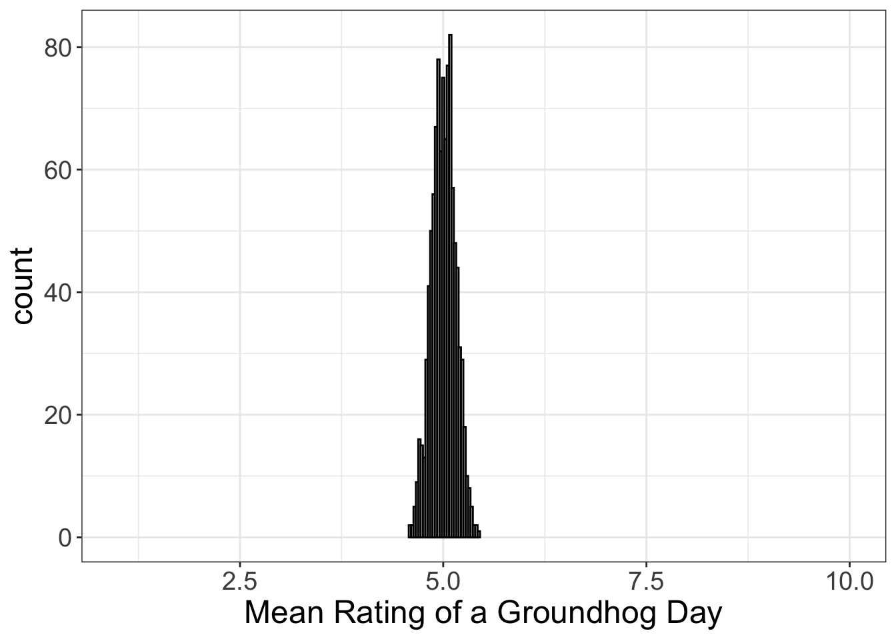
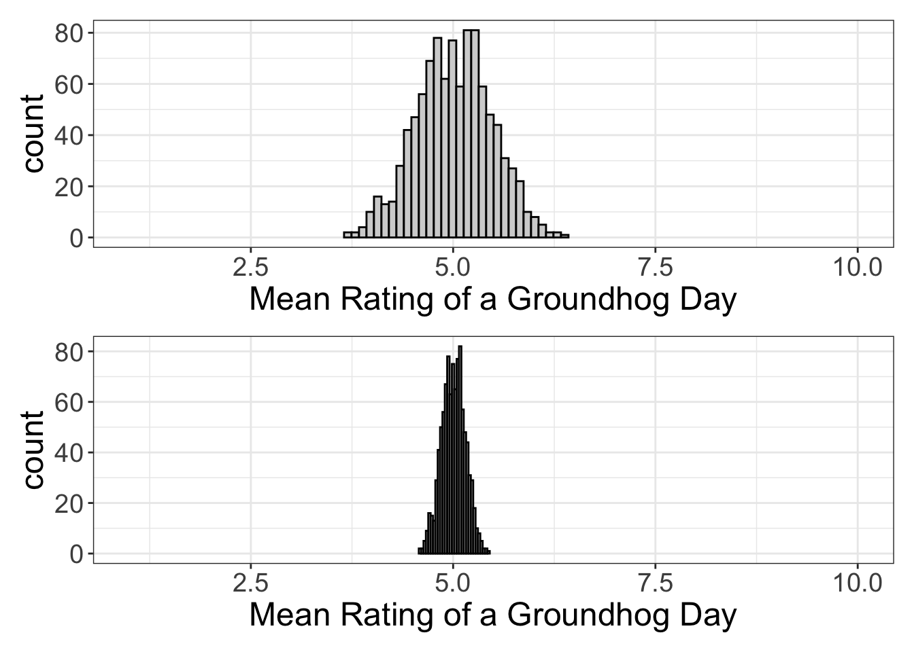
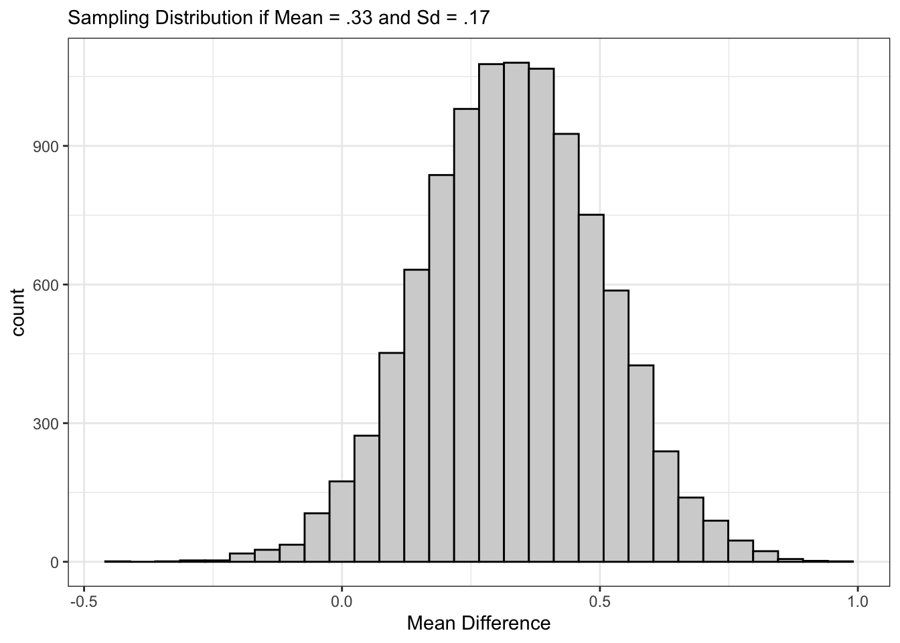
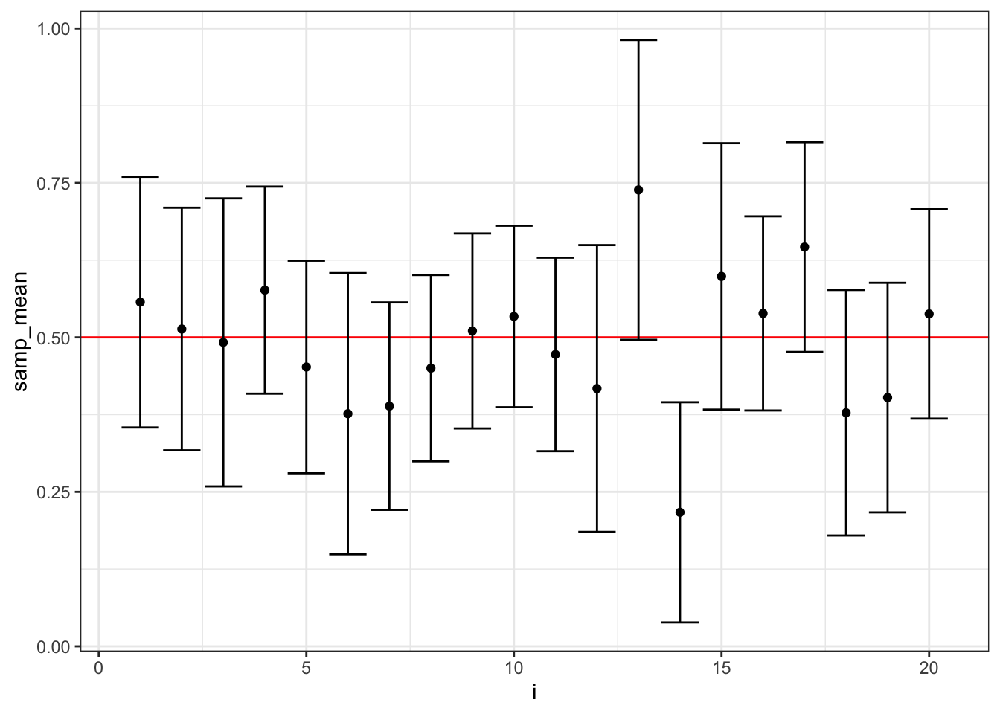

Probability 3: The Central Limit Theorem
Remember the movie Groundhog Day with Bill Murray? In that movie, the main character (played by Bill Murray) relived the same day over and over and over. (It happened to be Groundhog Day, by the way.)
Because he played the same day over and over again, he was able to predict exactly when the waitress would shatter the dish, where exactly on the street he would be approached by a begger, and what song would wake him in the morning and at what time (I got you babe @ 6am).
This movie is quite offensive to statisticians.
But why?
Because statisticians believe in variability. To a statistician, even if we were to relive the same day over and over, there would be variability. So, on some days, the waitress will shatter the dish. Other days she will not. And the probability that she will drop the dish has a probability density function.
And, perhaps, the statistician thinks that she has influence over whether the dish will shatter. Maybe she decides that if she wears pink, the dish has a smaller probability of shattering than when she is wearing green.
Fortunately, for the statistician, she gets to relive the same day over and over. So, of course, she can record the number of times the waitress drops it on pink versus green days.
But, for most of us, we cannot relive the same day over and over. But, in order to understand the other statistical paradigm (the frequentist/likelihood paradigm), you have to think about ground-hog day.
Groundhog Day
Alright, I’m going to swap out my example. Shattering dishes is cool and all, but it’s a binary outcome (shattered or not shattered). Let’s say instead that the time-challenged traveler (Phil Conners, which is Bill Murray’s character) wants to measure people’s reactions to his weather report. (Phil’s a weatherman, by the way). So, he gathers ratings of his weather report from 5 randomly selected individuals, and obtains the following data:
| Rating |
|---|
| 8 |
| 3 |
| 8 |
| 6 |
| 5 |
So, on a 1-10 scale, Phil averaged 6 and his standard deviation was 2.1.
Not terribly impressive.
But, Phil really doesn’t care about those 5 people’s opinions. He wants to know the opinions of the population (which, in this case, might be all individuals who watch his weather report). Does the population have an average of 6 as well?
Phil knows it’s impossible to measure every one of his viewers. But what he can do (but you cannot!) is measure 5 people again on the next repeat day. (And maybe he gets a 5.7 average this time).
And he can measure again on his next repeat groundhog day. (And maybe he gets a 4.9 average this time).
And he can measure again on his next repeat groundhog day. (And maybe he gets a 5.2 average this time).
And maybe Phil does this for 1000 consecutive days. If he were to plot the distribution of means across the 1000 relived deays, he might see something like this:

Again, Phil is living in a universe where he gets to relive the same day over and over again. Each of the scores represented in the plot above are means, not actual scores.
Now, let’s say that, instead of sampling 5 people, he instead sampled 50. And, let’s say that, again, he did this every (relived) day for 1000 days. What would that look like?

Let’s go ahead and put those side-by-side:

Notice what’s happening here? The spread of the scores is shrinking. Back when Phil was only measuring 5 people, mean scores ranged from about 3.5 to 6.5. When he started measuring 50 people, mean scores range from 4.5 to 5.5.
The Central Limit Theorem
This here example illustrates what we call the “central limit theorem,” or CLT as the “in” crowd calls it. In order to understand the CLT, you have to think of yourself as belonging in the Groundhog Day universe. We have to pretend that our experiment is one of an infinite number of experiments that could have been performed, if we were to somehow live the same day over and over again, an infinite number of times.
The distribution of means, in this case, is called a “sampling distribution of means.”
By the way, I’ve been talking about means, just to simplify things. But, all estimates we’ve talked about (e.g., slopes, intercepts, mean differences, Cohen’s d). So, you can have a sampling distribution of slopes, which is just a distribution of computed slopes for a bunch of repeated experiments. You can have a sampling distribution of mean differences, which is just a distribution of computed mean difference across a bunch of repeated experiments.
Actually, I rather think the idea of a “sampling distribution” is bold-worthy:
A sampling distribution is a hypothetical distribution of some statistic (e.g., mean, correlation, slope) that is (theoretically) computed across multiple (relived) samples
(Not very tweet-worthy, but it works for now).
The CLT states that, if you were indeed to relive the same day over and over, and if you were to perform the same experiment over and over, and if you plotted those means (or slopes, or intercepts, or whatever), a few things would happen:
The distribution of means (or slopes, intercepts, Cohen’s d, etc.) would be normally distributed. Notice that in all the histograms above, all the distributions are approximately normal. That’s not coincidental. That will always happen. By the way, that will always happen even if the underlying distribution isn’t normal. For example, if you were to roll the dice 10 times, compute the mean, then roll the dice ten more times and compute the mean, and do that a truck-load of times, guess what? The distribution of dice roll means will be normally distributed, even though the probability of getting a six/five/four/etc. is not normally distributed.
The distribution of means (or correlations, intercepts, etc) will always equal the “true” mean. So, Phil wanted to know what the average person thought of his weather report. If the CLT is to be believed, it looks like Phil’s “true” mean is 5. Or, if we were to be able to somehow sample the entire population, the actual rating would be 5. The CLT states that we don’t actually need to sample the entire population to figure out the true mean. Instead, we only have to relive the same day over and over again and repeatedly sample from the population! (Yes, that was very sarcastic and I’ll explain in a minute a much easier way to get a good guess about what the actual population mean is).
The spread of the distribution of means (or correlations/intercepts….are you getting sick of me qualifying this yet?) will decrease as you increase the sample size. That is exactly what I illustrated with the two graphics above. The distribution of means from samples of 5 had much more spread than a distribution of means from samples of 50. Why? Well, think of it this way: how easy it is to average a dice roll of 1 when you roll the dice 5 times? Not likely to happen, simply because you’d have to a one five times in a row to average a 1. On the other hand, how likely is it to average a 1 if you roll the dice 10,000 times? It’s practically impossible, because you’d have to get a 1 10,000 times in a row.
There’s actually a mathematical relationship between the sample size of the sample, the standard deviation of the sample, and the standard deviation of the sampling distribution:
\[ \begin{align} \text{standard deviation}_{\text{sampling distribution}} =& \frac{\text{standard deviation}_{\text{sample}}}{\sqrt(\text{sample size})} \\ se =& \frac{s}{\sqrt{N}} \end{align} \]
(By the way, we call the standard deviation of the sampling distribution the “standard error”).
This is some seriously powerful stuff. I know you don’t believe me. And that’s cool. You don’t know me from Adrian. You’re probably thinking, “yeah, that’s nice and all, but we don’t live in Groundhog Day! Nor do I have access to the population! How in the world is this helpful at all?”
To see how powerful it is, you have to make a subtle shift in your thinking. Yes, you cannot possibly repeat the same experiment an infinite number of times (let alone repeat the same day Groundhog Day-style). But, you can pretend your one experiment is one of an infinite number of experiments that could have happened.
Yes. Professional statisticians play pretend…All. The. Time.
Seriously, though, To make this branch of statistics work, we have to pretend (aka assume) our experiment is one of an infinite number of experiments that could have been performed. If that’s the case, then the implications of the CLT are powerful.
Implications of the CLT
Let’s recap real quick: the CLT assumes that our one study is one of an infinite number of studies we could have performed. Whatever mean we compute belongs to a theoretical distribution of means. And, the distribution of means is always normal, the mean of the distribution of means is equal to the population mean, and the spread of the distribution of means shrinks as our sample size increases.
Why is this a big deal?
So glad you asked….
Implication #1: Normality doesn’t really matter
The CLT says that the distributions of means is normal. When we compute inferences, we assume the distribution of the data (not the means) is normal. But, we use the central limit theorem to make inferences. So….really, as long as the distribution of means is normal, our inferences are valid.
But the distribution of means is always normal. So….yeah, we really don’t need to assume normality. if our distribution of means is normal. Or, if you’re interested in a correlation coefficient, you don’t really care about normality because your correlation coefficient (hypothetically) belongs to a normally-distributed distribution of correlation coefficients.
Implication #2. If your sample size is large enough, it’s quite likely your estimate is close to the true value
I’m going to reproduce the earlier image so you see this more clearly:

In the first image, the smallest mean in the sample was 3.7, or about 1.3 points from the “true” value. But that was with a sample size of 5. When we had a sample size of 50, our smallest mean was 4.6, or about 0.4 points different from the true value. See how much closer our worst estimate got?
Here’s the take-home message: for very large sample sizes, even your worst estimate of the population is going to be pretty close. (Though, see the caveats in the next section).
Implication #3: We can (kinda sorta) make inferences about the population
Two chapters ago how I said we could use PDFs to figure out a bunch of information about the population from the sample. For example, we could use the mean and standard deviation of a sample to figure out the probability of every score in that sample.
Wouldn’t it be nice if we could use the mean/standard deviation of the sample to infer that information about the population?
Yeah. But we can’t.
Why? We know that on average, the mean of the sample is equal to the mean of the population, but there’s no guarantee our specific instance of the sample mean/standard deviation will equal that of the population. That there is wishful thinking.
But, we can use the CLT to (kinda sorta) make inferences about the population. But, I’m going to talk about that in the next sections.
Using the CLT to Making Inferences
To make inferences, we’re actually going to cheat. Well, maybe we’re not cheating. What we’re really going to do is pretend the sample perfectly represents the population. Then we’re going to “uncheat” by just changing our interpretation of the values we actually compute. So, in the next section, I’m going to show you how we compute two statistics: confidence intervals and p-values. For each of these, we’re going to cheat by replacing population estimates with sample estimates. Then we’re going to uncheat by showing you how wonky the actual interpretations of p-values/CIs is.
Confidence intervals
Let’s say we’re doing a study where we collect data from 50 people and compute a mean difference. Say it’s 0.33. How close are we to the “true” value? We don’t know, nor can we. So instead we just assume our mean (0.33) is equal to the population mean and we assume our standard deviation (let’s say it’s 1.2) is equal to the population’s standard deviation. If the sample and the population are identical, what would the sampling distribution look like?
Remember, the standard deviation of the sampling distribution is equal to \(se = sd / \sqrt{N}\). So, if the sample and the population have identical means/standard deviations, then the standard deviation of the sampling distribution (again, we call this a standard error) is equal to \(1.2 / \sqrt{50} = .17\).
Okay. We’re making progress. We have the mean of the sampling distribution (because the mean of the sampling distribution is the same as the mean of the population, which we assume to be equal to our sample mean of .33). We also have the standard deviation of the sampling distribution (.17). We also know that we can use PDFs (probability density functions) to compute the probability of any range of scores.
So, the obvious next step is to use the PDF to compute the range of scores we could reasonably expect the sampling distribution to have. Sounds reasonable.
I’m going to show you a histogram of this (hypothetical) sampling distribution:

Based on a visual inspection, most scores seem to fall between 0 and 0.7. We could even be more precise and say something like, "95% of all scores fall between 0 and 0.66. (Don’t worry about how exactly I computed that interval. Just know that those values come from the same histogram above).
This is (conceptually) what a confidence interval is; we take the mean/standard deviation of our sample, assume they’re equal to the population values, use our sample mean/standard deviation to derive the sampling distribution, then use the PDF of the sampling distribution to get a range of values where we expect the mean estimates to fall.
But, to do that, we made a very big assumption; we assumed the sample’s values were exactly equal to the population values.
But what if they’re not? Maybe, in another Groundhog Day universe, we actually got a mean of .28 and a standard deviation of .95. Then our range of scores wouldn’t be (0, 0.66), but instead be (0.02, 0.54). And, of course, in another universe, we could get different values.
Each of the samples from our Groundhog Day universe will give us different sampling distribution estimates and different confidence intervals.
If you’re a frequentist/likelihood statistician, you’re okay with that. We just have to interpret the confidence interval a bit differently.
Interpreting Confidence Intervals
I’m just going to jump right into it and tell you how to interpret a 95% confidence interval:
A 95% confidence interval means that, if we were to repeat the study an infinite number of times and compute a confidence interval each time, 95% of those confidence intervals would contain the “true” value.
That’s a brain-ful. I know. My apologies. But we have to interpret it this way because we’re pretending the sample actually represents the population.
Despite my superiorly cogent explanation, I’m assuming you’re still confused. That’s cool. Let me try explaining it with a graphic.

In the above graphic, all dots represents the mean for a repeated experiment. The upper horizontal line is the upper limit of the 95% confidence interval and the lower horizontal line is the lower limit of the 95% confidence interval. We call these “error bars.” The red line is the true value (which is .5 in this case). Notice that 95% of the error bars contain the red line! Only one of those 95% confidence intervals (at Experiment #14) does not contain the true value.
So, again, let me define a confidence interval: a confidence interval tells you that, if you were to repeat your study an infinite number of times, your confidence interval will contain the true value an average of 95% of the time.
Still having a hard time conceptualizing it? That’s fine! It is really hard to think about. The interpretation is really weird, but it has to be really weird because we’re pretending the sample is the same as the population.
Now, you might be tempted to say, “alright…so a confidence tells you there’s a 95% probability the true value is between your upper and lower limit.”
Sadly, no. Look at the graphic above: each confidence interval either contains the true value or it does not. So, the probability it contains the confidence interval is actually 0 or 1. It doesn’t make sense to talk about the individual confidence intervals as having a probability of containing the red line (unless that probability is zero or one).
If you’re brilliant, you might have had an important insight about confidence intervals: the actual numbers we compute on our sample have no meaning! So the numbers 0 and 0.66 mean nothing. They are little more than a rough approximation of the uncertainty we might expect when estimating the population value. That’s a far less impressive interpretation than people actually make.
p-values
The confidence interval is (arguably) an adequate measure of our uncertainty about our estimate of a population parameter. That’s nice and all, but sometimes you just want to make a decision. Did the treatment work? Are these variables correlated? Do liberals score higher than conservatives?
The p-value was designed for decision-making. And, like its cousin the confidence interval, it requires some brain gymnastics to understand what’s going on.
The logic of hypothesis testing
We begin by assuming there is no effect. We call this the “null hypothesis.”
The null hypothesis is the test you seek to “nullify.” In other words, it’s the test we assume, then weight the evidence against that hypothesis.
You could test an intercept, slope, correlation, mean difference, etc. So, for example, we might assume…
- the correlation coefficients are equal to zero
- the difference between groups is zero
- the slope is zero
Notice the pattern? We’re always going to assume the parameter of interest is zero.
Once we set up our null hypothesis, we do similarly to what we did with our confidence intervals: we assume the sample estimates are the same as the population, then we use probability density functions (PDF) to compute probabilities. Remember that for a normal distribution, we only need the mean and standard deviation. But, we already have the mean. Why? Because we assume the mean is equal to zero. So, we only need the sample’s standard deviation to compute the PDF. (Okay, we also need the sample size, because we’re using a t-distribution. See the first note box for more information).
So, let’s recap: we assume the population’s true value is zero. We then that value and the sample’s standard deviation to generate our PDF. We can then use those probabilities to estimate the probability of any possible score…..
…including the score we computed from the sample. That’s exactly what a p-value is: it is the probability of obtaining our mean (or correlation, or mean difference, or slope, or intercept, etc.) if the population’s mean is zero and if the population’s standard deviation is the same as our sample standard deviation.
Let me say that again: the p-value represents the probability of obtaining our mean (or slope/intercept/etc) if the population value is equal to zero.
Let me say what a p-value is not:
- the p-value is not the probability the null hypothesis is true
- the p-value is not the probability our desired hypothesis is false
- the p-value is not the probability our results will replicate
Now, I’ve kinda side-stepped another layer of complexity, mostly because it’s not terribly important. The PDF we use is from the sampling distribution. Remember a sampling distribution is a hypothetical distribution of estimates (e.g., a mean, correlation, slope) we might obtain with repeated sampling. So, the p-value is telling you what proportion of those repeated samples we might expect to be as far from the mean as ours.
Okay, now I need to add another layer of complexity. Technically, the probability of obtaining our mean is zero. Always. Why? Because means are on a continuous scale. So our mean might be 54.23259347823912305736946….. Given enough digits, the probability of a specific value is zero. So, you can’t compute probabilities of specific values. What you can do, however, is compute the probability of values equal to or higher than your specific mean. So, we technically compute the probability of values as high as our mean or higher. (Of course, if our mean is negative, we might compute the probability of values as low or lower than our mean).
I know, this is getting complicated. And, it’s kinda necessary to have these complications because, again, we’re using sample information to make inferences to a population. But, I like to think of the interpretation of a p-value as having four levels of complexity. The first few are mostly true, but oversimplify some details. The last definition is exactly what a p-value is:
- p-value is the probability of obtaining our mean if the null is true
- p-value is the probability of obtaining a value of our mean (or a value more extreme) if the null is true
- p-value is the probability of obtaining a value of our mean (or a value more extreme) if we assume the population value is zero and the population standard deviation is the same as our sample’s standard deviation
- p-value is the probability of a (hypothetical) repeated sample having a mean as extreme or more extreme than ours, if we assume the population value is zero and the population standard deviation is the same as our sample’s standard deviation
That’s the p-value. Earlier I said we use the p-value to make decisions. Convention dictates that if \(p<0.05\) we “reject” the null hypothesis as a valid hypothesis of our data.
So, it sounds convoluted and all, but reasonable….right?
Sure. But, the problem is that people abuse p-values. We’ll talk about why/how in the next chapter.
Learning Objectives
- Understand what a sampling distribution is
- What the central limit theorem states
- The three implications of the CLT
- What confidence intervals are conceptually
- How to interpret confidence intervals
- The purpose of p-values
- The null hypothesis
- The meaning of a p-value
, with a slight modification. Remember that we’re assuming the population’s true value is zero. So, we don’t require any sample information to make that assumption.